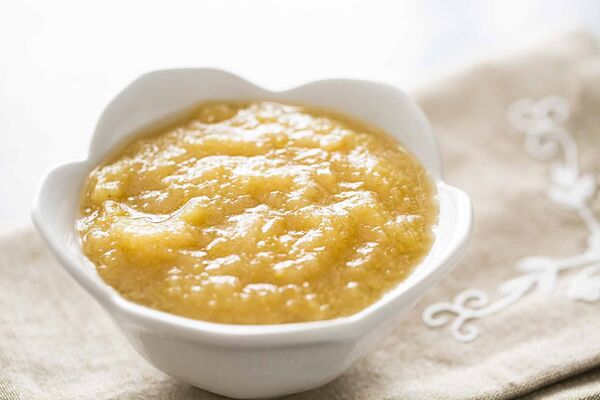

Applesauce

An easy, quick applesauce recipe. I have doubled it and canned it so we always have some on hand. My family loves it.
INGREDIENTS
- 6 cups apples (peeled, cored and chopped)
- ¾ cup water
- ⅛ teaspoon ground cinnamon
- ⅛ teaspoon ground cloves
- ½ cup white sugar
STEPS
- In a 2 quart saucepan over medium heat, combine apples, water, cinnamon, and cloves.
- Bring to a boil, reduce heat, and simmer 10 minutes.
- Stir in sugar, and simmer 5 more minutes.